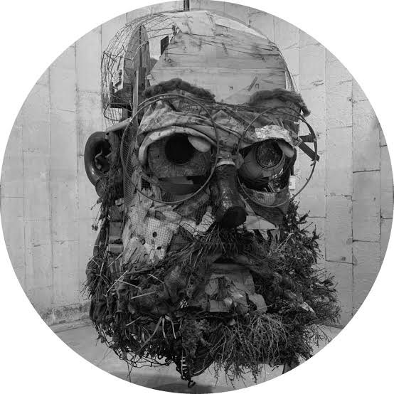
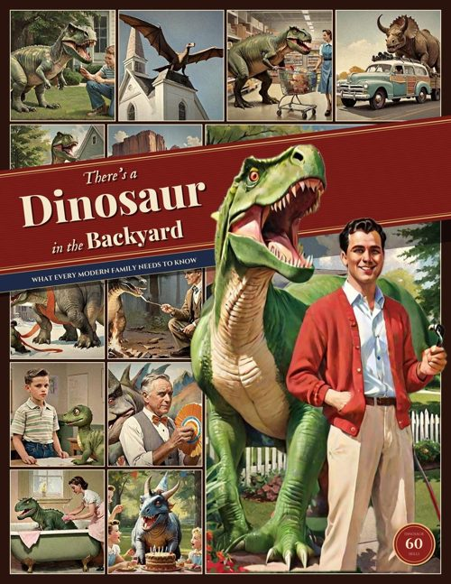
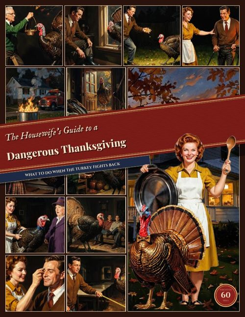
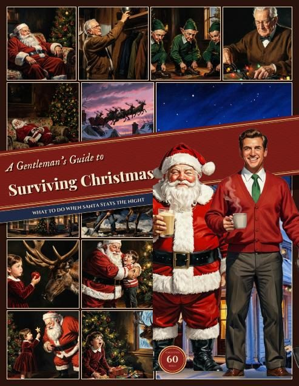

Groundswell
The first monograph on Houston sculptor Patrick Renner, whose reclaimed wood, painted and cut by hand, rises into rooms, rivers and public squares.
Wednesday Special makes beautifully printed books about artists, places and ideas, and the occasional book just for fun.
Lead title
01 / Art books
Groundswell
From a pile of found wood to a room-filling wave of colour. Groundswell follows Renner's work, from early found-object sculpture and the Funnel Tunnel to the installation that gives the book its name.
With an essay by Catherine Anspon, an interview with the artist, and hundreds of new photographs.
The work





Other projects
02 / From the press


Fun Books
Illustrated how-to guides for life's stranger emergencies, in the style of 1950s home manuals.
Visit funbookshop.com ↗Next monograph
A second artist title is in early planning.
Special Editions
Signed, numbered copies with an original element from the artist.
A small presswith a long view.
Wednesday Special Press is an independent publisher based in Houston, Texas. We work closely with artists to make books that feel as considered as the work inside them.
Every title is designed, edited and produced in house, printed on heavy art paper and bound to last.